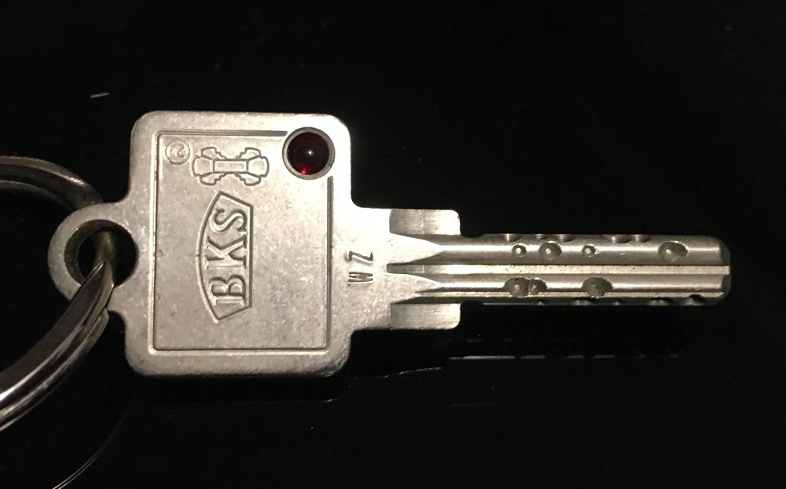

קונספט לדוגמה שנבנה עבור עו״ד אילנית מויאל בנימין · זה אינו האתר הרשמי של העסקA sample concept built for Adv. Ilanit Moyal Binyamin · This is not the business’s official website
משרד עורכת דין בהרצל 10, טירת כרמל. ירושה, רכישת דירה וייצוג בתיק.A law office at 10 Herzl Street, Tirat Carmel. Inheritance, buying a home, and representation in your case.
האותיות הקטנות,The fine print,במילים פשוטות.in plain words.
״לאורך התהליך סייעה והסבירה כל דבר בנועם וגובה העיניים, כך שאוכל להבין ולפעול כראוי.״
“Throughout the process she helped and explained everything kindly and at eye level, so I could understand and act properly.”
נוסח להמחשה בלבדIllustrative wording only
הואיל והמנוח הלך לעולמו והותיר אחריו עיזבון הכולל, בין היתר, זכויות בחשבונות בנק, בקופות גמל ובכספים שטרם אותרו, והואיל והיורשים על פי דין או על פי צוואה מבקשים לממש את זכויותיהם, מוסכם כי ינוהל משא ומתן מול כל הגורמים והרשויות הנוגעים בדבר, עד לחלוקת העיזבון.Whereas the deceased has passed away leaving an estate comprising, inter alia, rights in bank accounts, provident funds and monies not yet located, and whereas the heirs at law or under a will seek to realise their rights, it is agreed that negotiations shall be conducted with all parties and authorities concerned until the estate is distributed.
המוכר מצהיר כי הזכויות בנכס רשומות על שמו בלשכת רישום המקרקעין, נקיות מכל שעבוד, עיקול או זכות צד שלישי, למעט כמפורט בנספח א׳, וכי יעביר את החזקה בנכס לקונה במועד המסירה כנגד תשלום מלוא התמורה, בכפוף לרישום הערת אזהרה לטובת הקונה.The Seller declares that the rights in the Property are registered in his name at the Land Registry, free of any charge, attachment or third-party right save as set out in Appendix A, and that he shall deliver possession to the Buyer on the delivery date against payment of the full consideration, subject to a caution note registered in the Buyer’s favour.
בית המשפט הנכבד מתבקש לקבל את התביעה, לחייב את הנתבע בהוצאות ההליך ובשכר טרחת עורך דין, וליתן כל סעד אחר אשר ייראה לו צודק ונכון בנסיבות העניין, הכול כמפורט בכתב הטענות ובתצהירים המצורפים לו.The Honourable Court is respectfully requested to accept the claim, to order the Defendant to bear the costs of the proceedings and legal fees, and to grant any other relief it deems just and proper in the circumstances, all as set out in the statement of claim and the affidavits attached thereto.
עם מה לקוחותWhat clients broughtהגיעו אליה.to her desk.
שלושה סוגי תיקים, כפי שהלקוחות כתבו עליהם בגוגל.Three kinds of cases, as clients described them on Google.
ירושהInheritance
איתור כספים, משא ומתן וטיפול מול הרשויות.Locating funds, negotiating, and dealing with the authorities.
תמונה להמחשה: הכרמל ומפרץ חיפה, 1915Illustrative: Mount Carmel and Haifa Bay, 1915

רכישת דירהBuying a home
ליווי בתהליך הרכישה, עם הסברים בגובה העיניים.Guidance through the purchase, explained at eye level.
ייצוג בתיקRepresentation
ליווי אישי לאורך ההליך.Personal guidance through the proceedings.
המילים של הלקוחות, מתוך הביקורות:Her clients’ own words, from the reviews:
27 ביקורות.27 reviews.ארבע מהן כאן.Four of them here.
טיפול בירושה מא׳ ועד תו. והכל בנועם ובסבלנות רבה לכל הנוגעים בדבר. איתור כספים, ניהול מו״מ למיצוי ערך, טיפול מול רשויות, והכל במהירות, ביעילות ובשקיפות. מומלצת מכל הלב.
Handled an inheritance from A to Z. All of it kindly and with great patience towards everyone involved. Locating funds, negotiating to get the full value, dealing with the authorities, all quickly, efficiently and transparently. Recommended with all my heart.
ממליצה בחום על עו״ד אילנית מויאל בנימין. ליוותה אותי בתהליך רכישת הדירה במקצועיות ואדיבות. לאורך התהליך סייעה והסבירה כל דבר בנועם וגובה העיניים, כך שאוכל להבין ולפעול כראוי. ממליצה מכל הלב
I warmly recommend Adv. Ilanit Moyal Binyamin. She guided me through buying my apartment professionally and courteously. Throughout the process she helped and explained everything kindly and at eye level, so I could understand and act properly. Recommended with all my heart
עו״ד אילנית מויאל מקצוענית אנושיות מסירות ייצגה אותי עד להצלחה אמינות אחריות כלפי הלקוח מעל הכל אצלה בעלת תודעת שירות גבוהה ממליץ בחום מספר 1 בתחום
Adv. Ilanit Moyal: professional, humane, dedicated, represented me all the way to success, reliable, responsibility towards the client above all, a strong sense of service. Warmly recommended, number 1 in the field
אם את/ה מחפש/ת עו״ד איכותית, טובה, מקצועית, לוחמנית ומנצחת!! ממליץ בחום על עו״ד אילנית. הוגנת סבלנית בליווי אישי עם ידע נרחב ומעמיק בתחום. לוחמנית על התיק כאילו זה התיק האישי שלה - התוצאות הוכחו בשטח לא בסיפורים.
If you’re looking for a quality, good, professional lawyer who fights and wins!! I warmly recommend Adv. Ilanit. Fair, patient, with personal guidance and broad, deep knowledge of the field. She fights for the case as if it were her own, and the results were proven in practice, not in stories.
ממלאים את החסר, וההודעה מוכנה לשליחה בוואטסאפ.Fill in the blanks and the message is ready to send on WhatsApp.
נושאSubject
איפה אתם עומדיםWhere you stand
שליחהSend
שאלותShortקצרות.questions.
באילו נושאים פנו אליה?What have clients come to her for?
הלקוחות שכתבו עליה בגוגל הגיעו בנושאי ירושה, רכישת דירה וייצוג בתיק. על כל נושא אחר אפשר פשוט לשאול אותה.Clients who reviewed her on Google came about inheritance, buying an apartment and representation in a case. For anything else, simply ask her.
איפה המשרד?Where is the office?
ברחוב הרצל 10, טירת כרמל. המפה למטה.At 10 Herzl Street, Tirat Carmel. The map is below.
מה שעות הפעילות?What are the opening hours?
ראשון עד חמישי 9:00–18:00, שישי 8:00–12:00, שבת סגור.Sunday to Thursday 9:00–18:00, Friday 8:00–12:00, closed on Saturday.